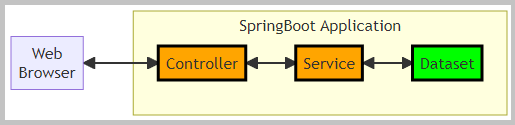
 The flowchart with SpringBoot application.
The flowchart with SpringBoot application.
The Thymeleaf is a server-side Java template engine.
The Sample Dataset
stores the data in the Java object 'Map<Long, Department>'.
The sections of this project:
Java source code. Packages:

 application sources :
kp
application sources :
kp
test sources :
kp
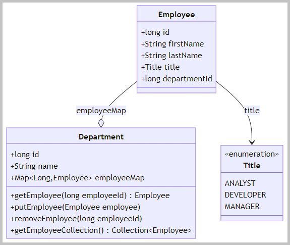
The domain objects class diagram.

 Java API Documentation ●
Java Test API Documentation
Java API Documentation ●
Java Test API Documentation
| Company | welcome page |
| Show departments | table view of the company's departments and links to its employees |
| Show employees | table view of selected department employees |
| Edit the existing employee | edit the information about an employee |
| Update the existing employee | update the information about an employee |
| Delete the employee | delete an employee from the department |
| Add a new employee | add a new employee to the department |
| Edit the existing department | edit the information about a department |
| Update the existing department | update the information about a department |
| Delete the department | delete existing department (with its employees) from the company |
| Add a new department | add a new department to the company |
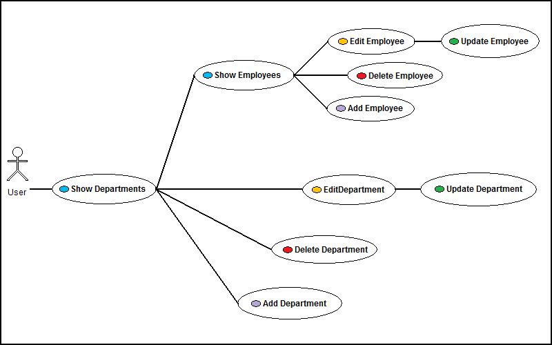
The use case diagram.
Back to the top of the page
Action:
 1. With batch file
"01 MVN clean install run.bat" build and start the SpringBoot Server.
1. With batch file
"01 MVN clean install run.bat" build and start the SpringBoot Server.
 2.1. Application tests
2.1. Application tests
Action:
1. With the URL http://localhost:8080
open the home page in the web browser and execute CRUD actions.
2. With batch file
"02 LYNX call server.bat" send requests to the web application from the Lynx browser.
3.1. Menu "Company". Template file
home.html.
The handler GET method:
kp.company.controller.CompanyController::company.
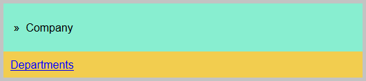
3.2. Menu "Departments". Template files
list.html,
edit.html,
confirmDelete.html.
3.2.1. Listing all departments.
The handler GET method:
kp.company.controller.DepartmentController::listDepartments.
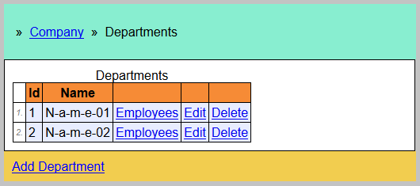
Listing all departments.
3.2.2. Editing the existing department.
Showing the dialog. The handler GET method:
kp.company.controller.DepartmentController::startDepartmentEditing.
The 'Save' button. The handler POST method:
kp.company.controller.DepartmentController::saveDepartment.
The 'Cancel' button. The handler POST method:
kp.company.controller.DepartmentController::cancelDepartmentEditing.
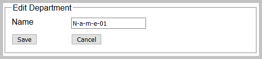
Editing the existing department.
3.2.3. Deleting the existing department.
Showing the dialog. The handler GET method:
kp.company.controller.DepartmentController::startDepartmentDeleting.
The 'Delete' button. The handler POST method:
kp.company.controller.DepartmentController::deleteDepartment.
The 'Cancel' button. The handler POST method:
kp.company.controller.DepartmentController::cancelDepartmentDeleting.
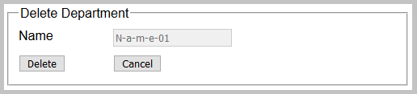
Deleting the existing department.
3.2.4. Adding a new department.
Showing the dialog. The handler GET method:
kp.company.controller.DepartmentController::startDepartmentAdding.
The 'Save' button. The handler POST method:
kp.company.controller.DepartmentController::saveDepartment.
The 'Cancel' button. The handler POST method:
kp.company.controller.DepartmentController::cancelDepartmentEditing.
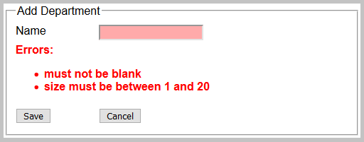
Adding a new department. Displayed validation messages.
3.3. Menu "Employees". Template files
list.html,
edit.html,
confirmDelete.html.
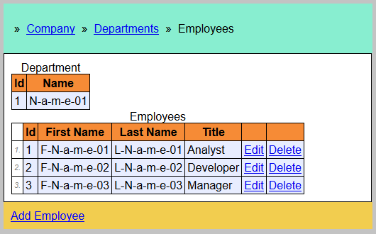
Listing all employees of the selected department.
3.3.2. Editing the existing employee.
Showing the dialog. The handler GET method:
kp.company.controller.EmployeeController::startEmployeeEditing.
The 'Save' button. The handler POST method:
kp.company.controller.EmployeeController::saveEmployee.
The 'Cancel' button. The handler POST method:
kp.company.controller.EmployeeController::cancelEmployeeEditing.
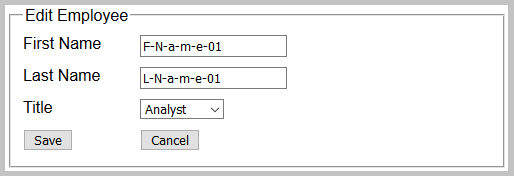
Editing the existing employee.
3.3.3. Deleting the existing employee.
Showing the dialog. The handler GET method:
kp.company.controller.EmployeeController::startEmployeeDeleting.
The 'Delete' button. The handler POST method:
kp.company.controller.EmployeeController::deleteEmployee.
The 'Cancel' button. The handler POST method:
kp.company.controller.EmployeeController::cancelEmployeeDeleting.
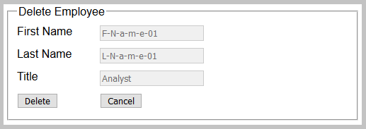
Deleting the existing employee.
3.3.4. Adding a new employee.
Showing the dialog. The handler GET method:
kp.company.controller.EmployeeController::startEmployeeAdding.
The 'Save' button. The handler POST method:
kp.company.controller.EmployeeController::saveEmployee.
The 'Cancel' button. The handler POST method:
kp.company.controller.EmployeeController::cancelEmployeeEditing.
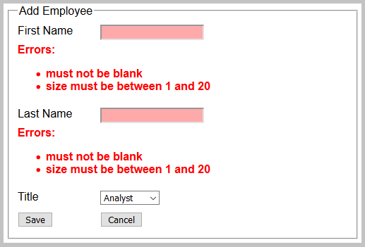
Adding a new employee. Displayed validation messages.
Back to the top of the page